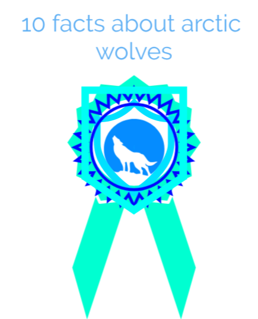

here are 5 more facts about artic wolfs

These mammals are 3 to 5 feet long from the tip of their nose
to the end of their tail and their height,
measured at the shoulder is 25 - 30 inches.
The Arctic Wolf is usually completely white this white coat
provides great camouflage in the snowy Arctic it also has two layers
of fur which provide excellent at keeping it warm from the freezing climate it lives in.
Arctic wolves are usually smaller than gray wolves,
and also have smaller ears, slightly shorter muzzles,
and shorter legs to reduce exposure to the frigid air.
Arctic wolves sometimes live alone but usually live in packs
of between five and eight wolves.Packs hunt together and can kill larger prey
than a lone wolf. Packs have a complex social order led by a dominant male
and female wolf. Only the alpha (dominant) female will have pups.
The scientific name for the Arctic Wolf is Canis Lupus Arcticus
the Definition is arctic wolf/ a gray wolf
Canis lupus arctos of arctic regions having white fur and a black tipped tail.